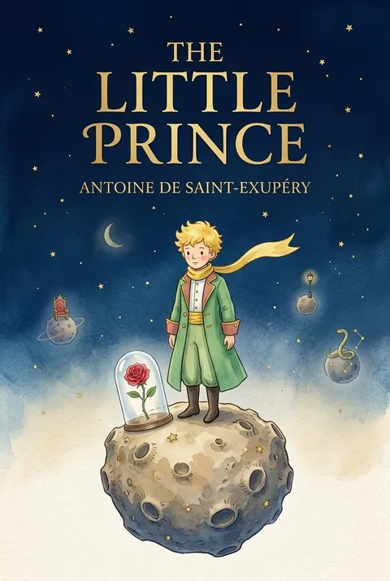
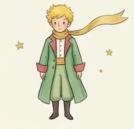
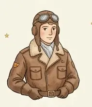
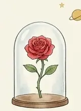
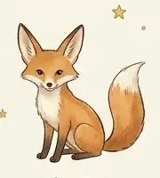
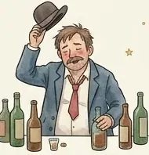
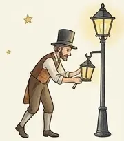
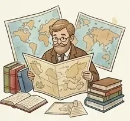
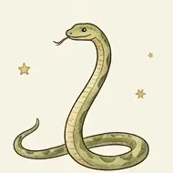

The Little Prince
by Antoine de Saint-Exupéry
ClassicEnglish
A pilot stranded in the Sahara meets a little boy who asks him to draw a sheep. Little by little the boy tells of his tiny planet, his proud rose and the strange grown-ups he met on his journey to Earth.
8 chapters. Reader adaptation in 8 chapters.
Table of Contents
Dramatis Personae
-

The Little Prince The boy from a tiny planet -

The Pilot The narrator, stranded in the desert -

The Rose The proud flower he loves -

The Fox A friend who teaches him about taming -

The Drunkard Ashamed of drinking - The Businessman Counts the stars he “owns”
-

The Lamplighter Lights and puts out his lamp every minute -

The Geographer A scholar who records but never explores -

The Snake The yellow snake of the desert
Chapters here are formatted for reading convenience from the authoritative edition.